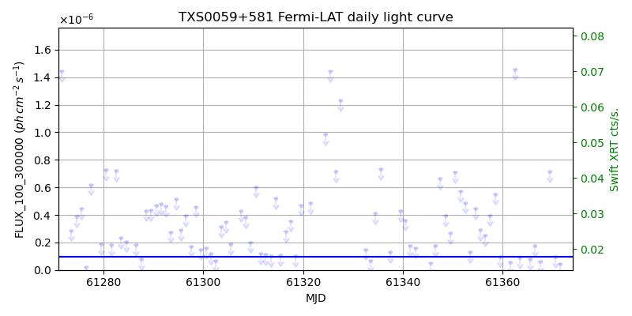
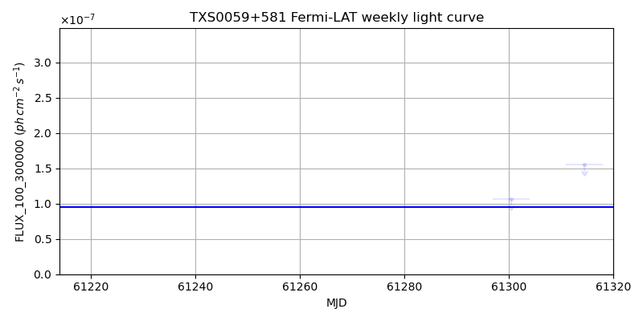

LAT Lightcurve site: https://fermi.gsfc.nasa.gov/ssc/data/access/lat/msl_lc/source/TXS_0059p581
Swift site: https://www.swift.psu.edu/monitoring/source.php?source=TXS0059+581
NED: Query
Time of last update of this page: UT: 2026-11-20 16:11 (MJD: 61364.675)
| Property | Value |
|---|---|
| R.A. | 1:02:45.84 |
| Dec. | 58:24:10.8 |
| z | 0.644 |
| 3FGL SpectrumType | LogParabola |
| 3FGL PL Index | |
| 3FGL Flux_100_300000 | 9.47e-08 1 / (s cm2) |
| 3FGL Flux_1000_300000 | 7.08e-09 1 / (s cm2) |
| 3FGL Flux >200 GeV | 3.25e-12 1 / (s cm2) |
| 3FGL Extrap. Crab >200 GeV | 0.01 |
| 3FGL Flux After EBL Absorption >200GeV | 2.99e-13 1 / (s cm2) |
| 3FGL EBL Crab Fraction >200GeV | 0.00 |

| MJD | dMJD | Flux | dFlux | Frac3FGL | FracCrab>200GeV | EBLFracCrab>200GeV |
|---|---|---|---|---|---|---|
| 61358.50 | 0.50 | 5.52e-07 | 0.00e+00 | 0.00 | 0.00 | 0.00 |
| 61359.50 | 0.50 | 9.83e-08 | 0.00e+00 | 0.00 | 0.00 | 0.00 |
| 61361.50 | 0.50 | 5.55e-08 | 0.00e+00 | 0.00 | 0.00 | 0.00 |
| 61362.50 | 0.50 | 1.46e-06 | 0.00e+00 | 0.00 | 0.00 | 0.00 |
| 61363.50 | 0.50 | 9.01e-08 | 0.00e+00 | 0.00 | 0.00 | 0.00 |

| MJD | dMJD | Flux | dFlux | Frac3FGL | FracCrab>200GeV | EBLFracCrab>200GeV |
|---|---|---|---|---|---|---|
| 61027.50 | 3.50 | 1.83e-07 | 0.00e+00 | 0.00 | 0.00 | 0.00 |
| 61041.50 | 3.50 | 2.42e-07 | 0.00e+00 | 0.00 | 0.00 | 0.00 |
| 61223.50 | 3.50 | 1.86e-06 | 0.00e+00 | 0.00 | 0.00 | 0.00 |
| 61300.50 | 3.50 | 1.06e-07 | 0.00e+00 | 0.00 | 0.00 | 0.00 |
| 61314.50 | 3.50 | 1.55e-07 | 0.00e+00 | 0.00 | 0.00 | 0.00 |
| MJD | dMJD | Flux | dFlux | Frac3FGL | FracCrab>200GeV | EBLFracCrab>200GeV |
|---|---|---|---|---|---|---|
| 61358.50 | 0.50 | 1.57e-08 | 0.00e+00 | 0.00 | 0.00 | 0.00 |
| 61359.50 | 0.50 | 1.44e-08 | 0.00e+00 | 0.00 | 0.00 | 0.00 |
| 61361.50 | 0.50 | 1.55e-08 | 0.00e+00 | 0.00 | 0.00 | 0.00 |
| 61362.50 | 0.50 | 8.18e-08 | 0.00e+00 | 0.00 | 0.00 | 0.00 |
| 61363.50 | 0.50 | 3.33e-08 | 0.00e+00 | 0.00 | 0.00 | 0.00 |

| MJD | dMJD | Flux | dFlux | Frac3FGL | FracCrab>200GeV | EBLFracCrab>200GeV |
|---|---|---|---|---|---|---|
| 61027.50 | 3.50 | 1.20e-08 | 0.00e+00 | 0.00 | 0.00 | 0.00 |
| 61041.50 | 3.50 | 2.67e-09 | 0.00e+00 | 0.00 | 0.00 | 0.00 |
| 61223.50 | 3.50 | 7.33e-07 | 0.00e+00 | 0.00 | 0.00 | 0.00 |
| 61300.50 | 3.50 | 8.11e-09 | 0.00e+00 | 0.00 | 0.00 | 0.00 |
| 61314.50 | 3.50 | 2.52e-09 | 0.00e+00 | 0.00 | 0.00 | 0.00 |
--------------------------------------------------------- Using user-supplied coords: 1:02:45.84 58:24:10.8 2000 --------------------------------------------------------- FLWO UT night of: 2026-11-21 Local Sid. @ Midnight: 03:37 Sunset (-15.0) (local, UT): 18:33 01:33 Sunrise (-15.0) (local, UT): 05:47 12:47 Moonrise (local, UT): Moonset (local, UT): 03:40 10:40 Moon phase: 0.85 --------------------------------------------------------- AzTime LSID UT Obj_el Obj_az Mn_el Mn_az Sep. --------------------------------------------------------- 18:33 22:09 01:33 50.2 34.4 47.9 117.4 51.6 19:03 22:39 02:03 53.7 31.4 53.3 125.0 51.4 19:33 23:09 02:33 56.8 27.3 58.2 134.7 51.3 20:03 23:39 03:03 59.5 21.9 62.3 146.9 51.1 20:33 00:09 03:33 61.6 15.1 65.1 162.1 51.0 21:03 00:39 04:03 62.8 7.1 66.3 179.7 50.8 21:33 01:09 04:33 63.1 358.5 65.4 197.5 50.7 22:03 01:39 05:03 62.5 350.1 62.9 213.2 50.6 22:33 02:09 05:33 60.9 342.4 59.0 225.9 50.4 23:03 02:39 06:03 58.7 336.1 54.2 235.9 50.3 23:33 03:09 06:33 55.8 331.1 48.9 243.9 50.2 00:03 03:39 07:03 52.5 327.4 43.2 250.4 50.0 00:33 04:10 07:33 49.0 324.9 37.3 255.9 49.9 01:03 04:40 08:03 45.2 323.3 31.2 260.7 49.8 01:33 05:10 08:33 41.3 322.4 25.1 265.1 49.7 02:03 05:40 09:03 37.4 322.2 19.0 269.2 49.5 02:33 06:10 09:33 33.5 322.5 12.9 273.0 49.4 03:03 06:40 10:03 29.7 323.4 6.8 276.9 49.3 03:33 07:10 10:33 25.9 324.6 1.0 280.7 49.2 04:03 07:40 11:03 22.3 326.2 -4.9 284.7 49.1 04:33 08:10 11:33 18.8 328.1 -11.1 288.8 48.9 05:03 08:40 12:03 15.5 330.4 -16.8 293.2 48.8 05:33 09:10 12:33 12.5 332.9 -22.3 298.1 48.7 05:47 09:25 12:47 11.1 334.3 -24.8 300.5 48.6 --------------------------------------------------------- Dark hours >55 deg.: 0.00